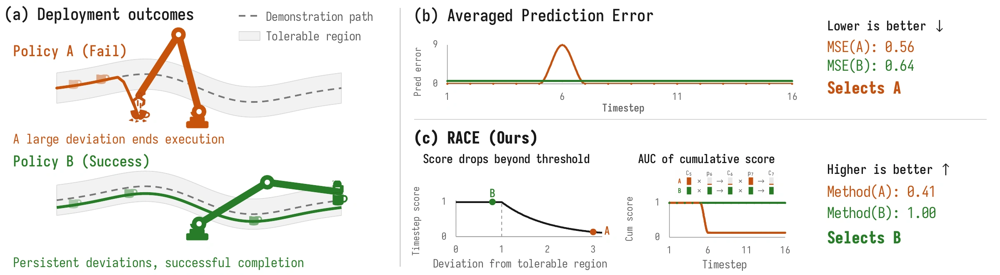
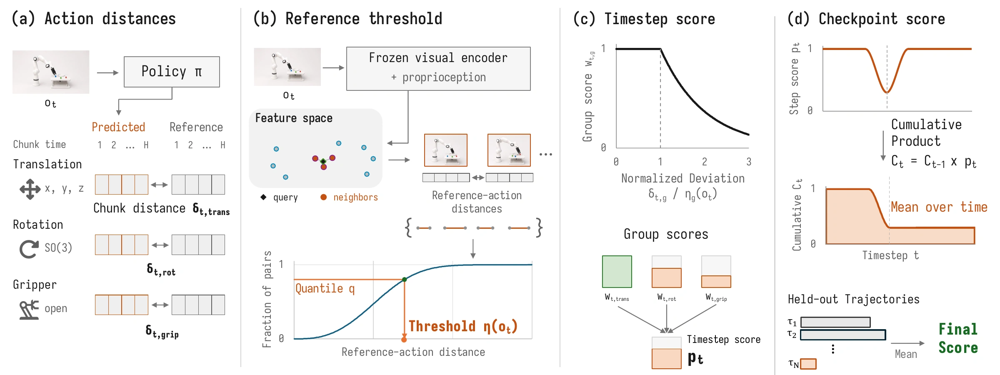

RACECalibrated Cumulative Scoring
for Rollout-Free Checkpoint Selection
RACE ranks robot policy checkpoints using successful reference trajectories, without deploying every candidate.
rank correlation in simulationHeld-out demos · Spearman ρ · 95% CI [0.72, 0.92]
simulation checkpoint ranking12 checkpoints per run · 3 reference sources
real-robot evaluation trials6 tasks · 2 policy families · 30 trials / checkpoint
Real-world success vs. RACE
Measured success and RACE scores across training checkpoints.
Illustrative task footage, not individual checkpoint recordings. Success and RACE use separate scales.
Explore the checkpoint measurements ↓Real-world checkpoint ranking
How closely does an offline score track measured deployment success?
Joint-velocity control · 10 checkpoints per task · 30 trials per checkpoint.
Illustrative task footage; checkpoint success rates come from separate evaluations.
Explore the measured checkpoints
Metric definitions and evaluation protocol
The paper protocol uses 20 training demonstrations, 30 held-out successful reference demonstrations, and 10 candidate checkpoints per task, with 30 robot trials per checkpoint (1,800 total trials). The available plotting bundle contains 9 checkpoints per π₀.₅-DROID task and 10 per Diffusion Policy task; this page displays those 57 measured points without filling missing values. RACE uses task-specific scoring settings. The scatter plot uses within-task z-normalization; selecting a task shows its own ranking metrics. All tasks shows the mean of task-level metrics, not correlations recomputed from pooled points.
Spearman ρ measures rank agreement. MMRV (Mean Maximum Rank Violation) measures success-rate gaps caused by ranking inversions. nRegret measures the gap between the selected checkpoint and the best measured checkpoint, normalized by the task’s success-rate range. RACE scores are ranking signals, not success probabilities.
Download measured values and metrics (JSON)Compare all four criteria
View checkpoint values
Video overview
The idea and experiments in three minutes.
Lower error can still mean failure
One fatal mistake can hide behind a low average error. Larger, recoverable deviations can still succeed.

How RACE scores a checkpoint
Calibrate locally
Set action-group thresholds from nearby successful reference states.
Score deviations
Treat within-threshold differences equally; penalize larger departures.
Accumulate over time
Early low scores reduce later contributions. Average to rank checkpoints.

Simulation experiments
Checkpoint ranking across eight DexMimicGen tasks and three sources of successful references.
Mean Maximum Rank Violation ↓
Lower is better. Lines show 95% hierarchical bootstrap intervals over 10 seeds per task and 8 tasks.
Full simulation results and confidence intervals
Means are averaged over seeds within each task, then equally over eight tasks. RACE uses task-specific settings. Noised rollouts are successful trajectories collected under perturbations; this evaluates reference-source shift, not robustness to failed demonstrations. Hit@k is the fraction of runs in which the empirically best checkpoint is among the criterion’s top k candidates.
Eight manipulation tasks
Task illustrations from DexMimicGen, not RACE-evaluated rollouts. Source website: CC BY-SA 4.0. Clips resized and re-encoded.
What makes the score useful?
Temporal scoring and consequential deviations.
Accumulation improves ranking
Same timestep scores, cumulative aggregation: ρ 0.63 → 0.76; nRegret 0.180 → 0.096.
Four-task temporal ablation · paper Table III(b).
Similar MSE, different outcomes
Similar MSE changes, but success drops 4 vs. 40 points. RACE drops 1.42% vs. 52.69%.
Box Cleanup · uniform vs. bottleneck perturbations · 50 paired trials · Table II.
Scope and limitations
RACE provides relative checkpoint rankings, not calibrated probabilities of success. Variation in successful reference actions is a proxy for tolerable deviations; it does not establish recovery or predict behavior at unseen states. Selected checkpoints still require deployment validation. Main results use task-specific scoring settings; fully shared settings reduce mean simulation rank correlation from 0.80 to 0.69.